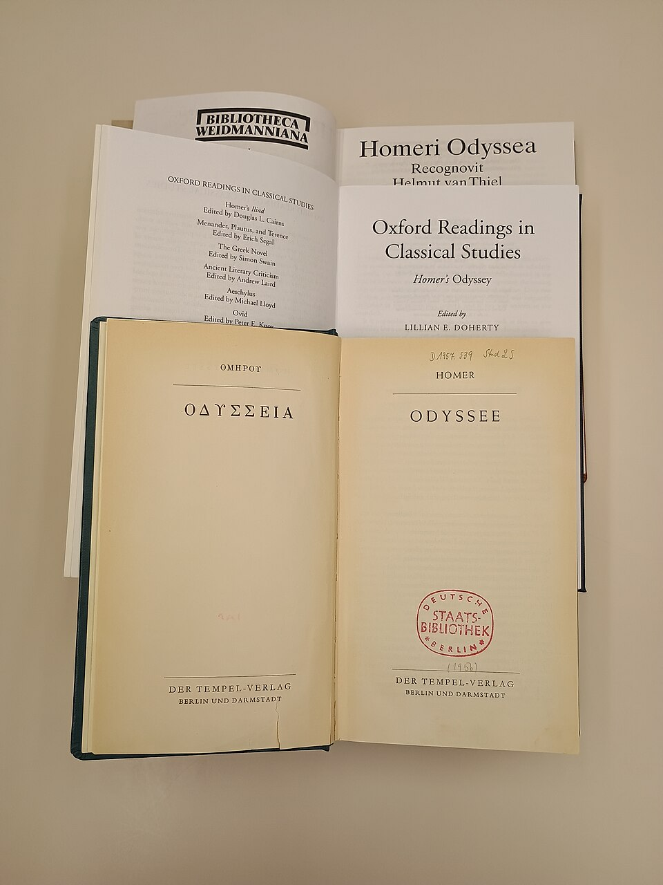

Introduction
Victor Hugo’s Les Misérables tells the story of people facing poverty, social inequality and injustice in 19 th century France. In the story, characters such as Jean Valjean, Fantine and Cosette allow the reader to understand how social conditions and poverty can affect individual’s opportunities. Therefore, this text makes clear that suffering experienced by characters does not necessarily stem from their own choices, but may be due to an unfair social system that does not support vulnerable people.
Marxist/Socio-economic Analysis
The Marxist/Socioeconomic Lens lens looks at how poverty, wealth differences and socio-economic factors affect individuals and society. Throughout Les Misérables, Fantine experiences issues caused by these factors. As a working class individual, Fantine has very little money to provide for her daughter, Cosette, since she was left by Félix Tholomyès. Due to not having a lot of money, and opportunities, Fantine is very susceptible to exploitation.
Poverty has limited Fantine’s opportunities. Since Fantine became pregnant out of wedlock, she was sacked from her place of employment in the factory. As a result, Fantine struggled to earn money. This example highlights how social pressures and economic inequality can combine to create unfair situations for vulnerable people. Rather than supporting Fantine, she faces criticism which causes her to fall further into poverty.
Jean Valjean’s experiences also demonstrate the effects of social class. He is sent to prison for stealing bread, showing that those living in poverty may enter into conflict with legal systems. However, once released from prison, he still faces discrimination. This implies that it is difficult for disadvantaged people to better their lives, due to the way social systems operate and the attitude of people within society.
The relationship between Jean Valjean and Inspector Javert allows conflicting views of justice to be presented in the novel. Javert has a strict view of justice, however Valjean begins to show more compassion throughout the novel. This therefore provokes the question of whether justice should be purely punitive, or if social factors affecting people’s behaviour should also be taken into consideration.
Considering this text through a Marxist/Socio-economic lens, we can see that poverty, social class inequality and social systems have a major effect on people’s lives. The suffering of Fantine, and the difficulties faced by Jean Valjean demonstrate that individuals should be treated fairly taking into consideration the circumstances they face. Therefore, this text encourages us to realise that in order to create a fair society, we must provide opportunities for people, support vulnerable people and value everyone with dignity.